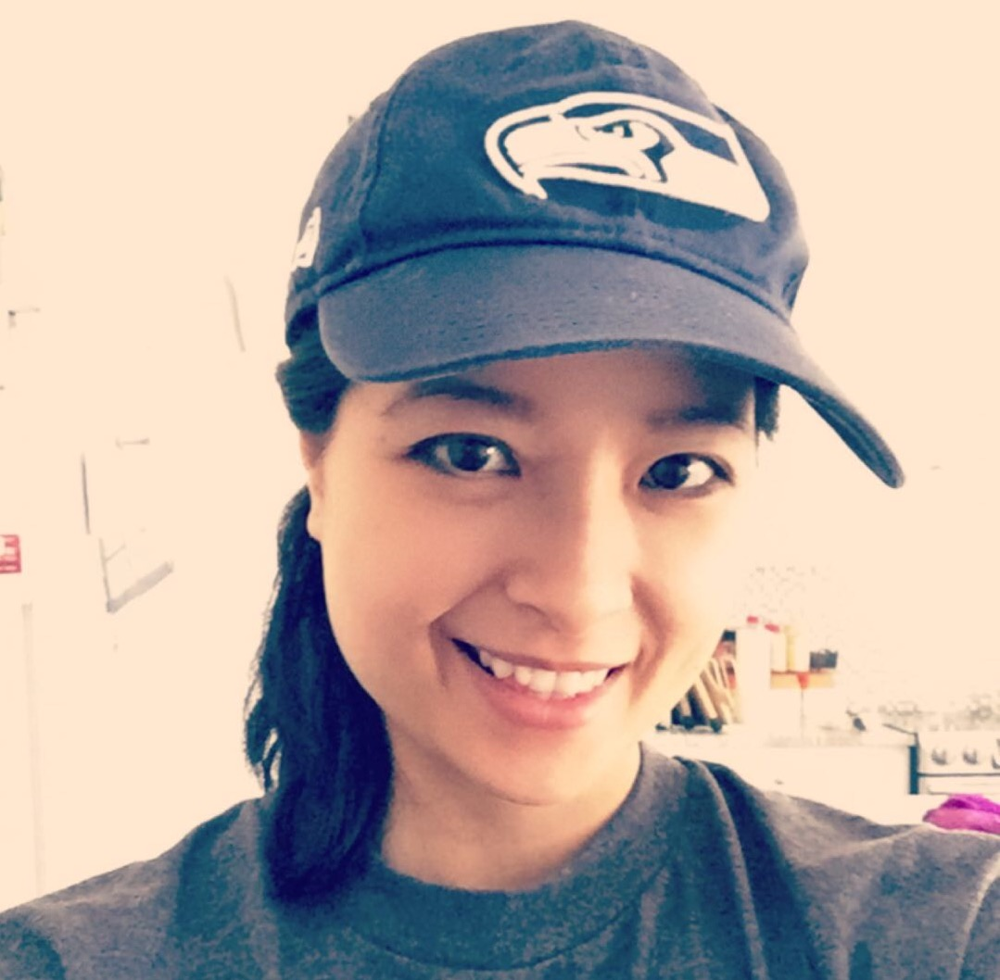

Jennifer
Jennifer has a bachelor’s degree from the University of Washington in Biology and Speech/Hearing Sciences. She is into all things health and fitness, including yoga and meditation. She enjoys traveling and the great outdoors. Currently, Code Fellows is taking over her life and coding is becoming an interest of hers.